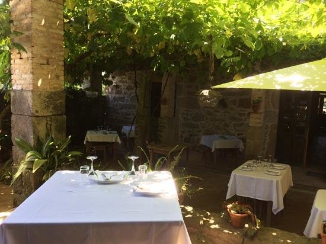
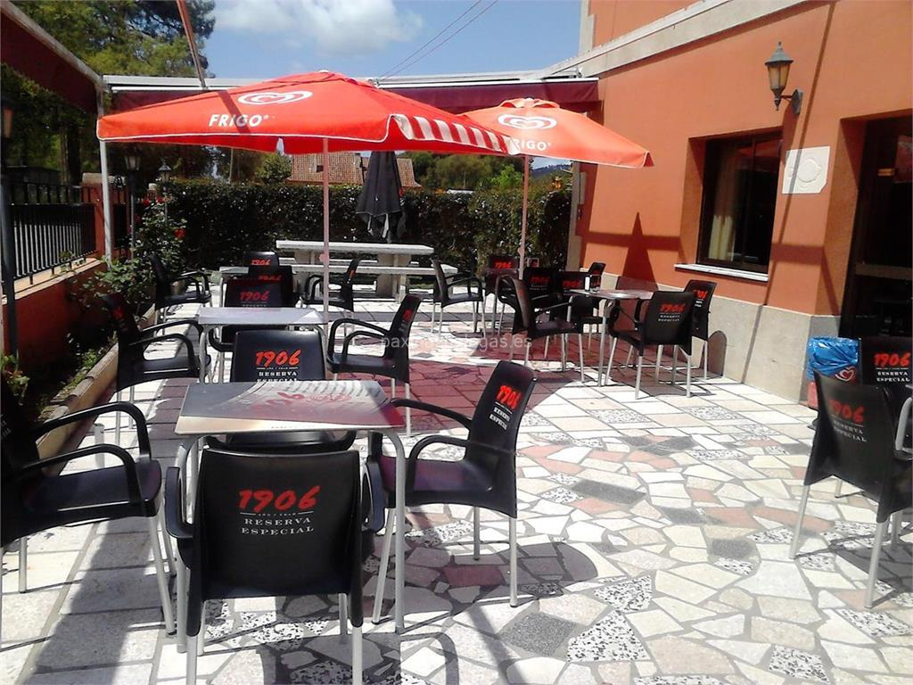

Estas construcciones, situadas dentro de este municipio de hermoso y fragante nombre, se asientan en unas laderas que sirven de magnífico mirador sobre O Rosal.
Los molinos destacan por la imponente maravilla de ingeniería tradicional que muestran, así como polo suyo aparentemente frágil equilibrio sobre las costas donde se encuentran. Además su entorno, cuidado con esmero, permite ver multitud de especies vegetales especialmente favorecidas por la bonanza del microclima de la zona.
En la búsqueda de los antiguos sonidos de las "moas" y de los "rodicios", los caminantes podrán conseguir, desde las alturas, unas magníficas vistas de singular belleza sobre el monte Santa Tegra y sobre el Miño.
El principal objetivo de Bodegas Terras Gauda es la elaboración de vinos singulares de máxima calidad y con personalidad propia , dentro de la DO Rías Baixas. Impulsamos no sólo las visitas a la bodega sino, en general, todas las experiencias derivadas del turismo enológico y gastronómico en este paraje privilegiado donde nos encontramos, tan cerca de la desembocadura del Río Miño.
A Taberna O Lagar en Eiras abriuse en Xuño do 1988, na Adega e Cortes dunha antiga casa de Labregos (1800), a casa de María da Morghada e do Tío Francisco. Queriamos darlle valor as pedras, e recuperar a casa do esquecemento na que estaba sumida. Pedra e Madeira, os piares da construción Galega están na nosa Taberna. E tamén están os piares da súa cociña, a calidade da súa materia prima, e que brille naturalmente, sen enmascarala. Nesta antiga casa de Labregos, coa despensa chea de todo o bo que nos rodea, plantámonos case que no cuarto de século. Tempo de moito aprender, e de tentar que cando alguén peta na nosa porta, quede con ganas de volver a facelo, pois para nos non hai mellor propina que a cara dunha persoa satisfeita.
Restaurante de cocina tradicional ubicado en O Rosal. Dispone de menú del día de lunes a viernes. Especialidad en carne a la piedra. Se hacen comidas por encargo y para llevar. Disponemos de servicio wifi y terraza para clientes
